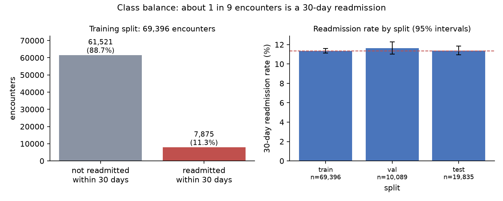
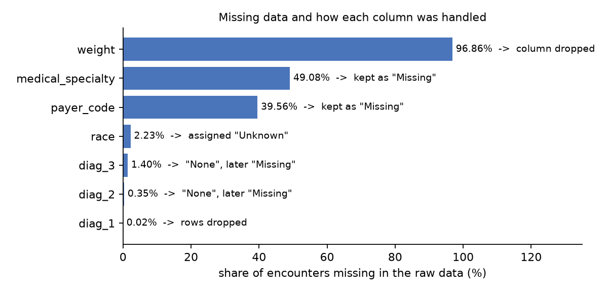
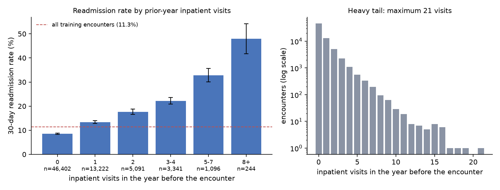
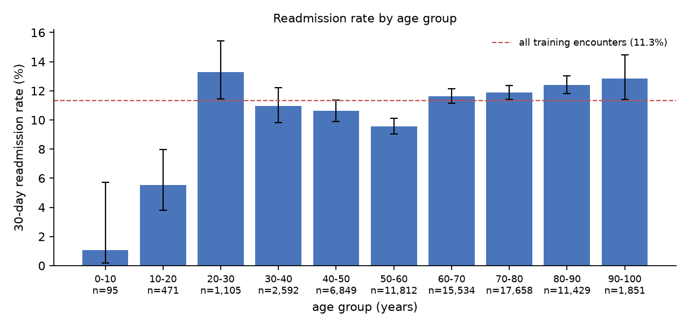
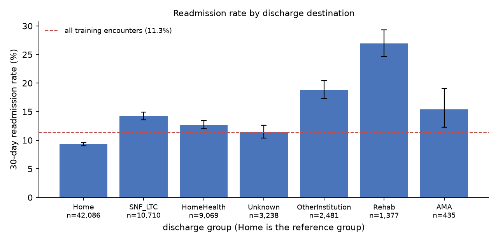

Question
Can a model use what is known when a diabetic patient is discharged to flag encounters that end in a readmission
within 30 days, and is flagging worth it once a missed readmission is weighed against an unnecessary follow-up?
One row is one hospital encounter, the target is readmit_30d (about 11.4% positive), and the
prediction is made at discharge. Results describe association and prediction on 1999–2008 US hospital data, not
causes.
Data
The data are 99,320 encounters from 69,979 patients across 130 US hospitals (Strack et al., 2014), downloaded from OpenML. Patients with several encounters are common (1.42 encounters per patient in the training split), so the data were split by patient: 70% train, 20% test, 10% validation (seed 42), with no patient in more than one split. Positive rates are 11.35%, 11.40% and 11.63%. Row-level data are not published here.
Main quality issues: weight was 97% missing and was dropped; specialty (49%) and payer (40%) were
kept with a Missing category; patients who died or went to hospice were removed because they cannot
be readmitted.





Preprocessing
The 99 features include length of stay, procedure, lab and medication counts, prior-year outpatient, emergency and inpatient visits, diagnosis categories, discharge and admission groups, and seven medication columns. Categories are one-hot encoded with one reference level dropped, so the design matrix stays full rank. Thirteen continuous columns are standardised with training-patient statistics only; I rebuilt them from the raw file and matched the saved features to about 1e-15. Race is excluded from the features and kept only for the fairness audit, though proxies for race remain in the features.
Methods and baselines
The main model is logistic regression written from scratch: sigmoid, log loss, gradient and Hessian, fitted by Newton’s method, with gradient descent and Ridge for comparison. Each piece was checked against finite differences and scikit-learn (coefficients agree to about 1e-12). Newton converges in 6 updates. Gradient descent had not converged after 50,000 iterations, because the Hessian is poorly conditioned (condition number 24,808). Ridge did not improve validation loss: the unpenalized model was not overfitting with 69k rows and 99 features.
Baselines: a constant predictor (the training base rate), random forest and gradient boosting with settings fixed in advance. Accuracy is not used, because always predicting “no readmission” is already 88% accurate.
Evaluation design
Train is for fitting, validation for every design choice (Ridge strength, ablations, threshold exploration, error
analysis), and the test set was scored once, for two models frozen beforehand: the from-scratch Newton
model and gradient boosting. The primary metric is log loss, with AUC, Brier score and calibration alongside.
Because the cost of a missed readmission is unknown, decisions are evaluated for a range of cost ratios r
(a missed readmission costs r times an unnecessary intervention). If probabilities are calibrated, flagging
a patient pays off when risk exceeds 1/(1+r), so no threshold is tuned. Intervals are 95% bootstrap
intervals over encounters.
Results
The models beat the base-rate predictor, but modestly: Newton’s Brier score is 4.7% better, and its AUC of about 0.67 means a random readmitted patient is ranked above a random non-readmitted one about two times in three. Logistic regression, random forest and gradient boosting all land at AUC 0.67–0.68, which points to limited information in the features, not a modelling shortfall. Gradient boosting has a small but clear log-loss edge (−0.0026, interval excludes zero on test). Newton is better calibrated (test calibration slope 1.01 against 1.13).
Ten equal-count risk bins; bars are 95% intervals. Points near the dashed line mean the probabilities can be taken at face value.
Six feature-set ablations on validation (dropping payer or specialty columns, log1p on visit counts,
adding race back) changed log loss by less than 0.001, so the model is robust to these choices. The strongest
signals are prior inpatient visits (odds ratio 1.38 per standard deviation) and discharge to rehab (3.5×).
Cluster-robust standard errors (clustered by patient) were within 1% of the naive ones on median. Coefficients describe association only.
Try it: what does the cost ratio change?
The saving is measured against the cheaper of two trivial policies (flag nobody, flag everybody). For r of 1 or 20 the model has no useful operating point: it flags almost nobody or almost everybody. These are aggregates computed from saved predictions; no patient rows are shown.
Errors
At r = 5 on validation the model catches 355 readmissions and misses 818, with 996 unnecessary flags. Missed readmissions look like patients who were correctly left alone: 61% have no prior inpatient visit. Patients with no prior inpatient visit and a home discharge are 42% of validation patients and hold 24% of all readmissions, but their readmission rate is only 6.7%, below the 16.7% break-even for r = 5, and the model flags almost none of them. False alarms are mostly frequent prior utilisers and rehab discharges, who are at high risk but often do not return. These errors indicate limited information in the recorded features and not a fitting failure. Calibration holds across prior-visit counts, including for extreme utilisers.
Fairness audit (test set, r = 5, frozen Newton model)
The clearest difference is by age: sensitivity is 36% under 50 and 22% at 60–69 (non-overlapping intervals), and the oldest patients get the most unnecessary flags. Race and gender show no detectable difference between the large groups, but the small race groups have only 8–42 readmissions each, so no claim is possible for them. About 14 groups were compared with no multiple-comparison adjustment, and this audit does not show that the model is “fair”.
Limitations
- Weak signal. At r = 5 about 70% of readmissions are missed; at r = 10 the model catches about three in four but must flag more than half of all patients.
- Assumed costs. r is an assumption, and an intervention is treated as a perfect fix.
- Calibration. The threshold rule needs calibrated probabilities; gradient boosting is somewhat too conservative.
- Proxies and groups. Race is excluded, but proxies remain. Small groups have low power.
- Preprocessing. Category thresholds were set on all rows (without labels, except one disclosed threshold); a training-only recomputation is still to do.
- Scope. 1999–2008 US data, excluding deaths and hospice; association, not causation. Intervals resample encounters, not patients.
Conclusion
A logistic regression written from scratch and verified against standard libraries reaches nearly the accuracy of flexible models on this task (AUC about 0.67–0.68), is better calibrated, and saves cost over trivial policies when a missed readmission is worth about 3–10 unnecessary follow-ups. It is a weak predictor and misses most readmissions, so it would not be a reliable standalone tool. The main gains in this project came from careful splitting, fair evaluation and honest reporting, not from model complexity.
Reproduce
Code and notes: github.com/Abhimanyu-arya/30-Day-Hospital-Readmission-Prediction.
Data: OpenML ID 4541, which carries the UCI dataset “Diabetes 130-US Hospitals for Years 1999–2008” (licence CC BY
4.0 per the UCI page). Credit: Clore, J., Cios, K., DeShazo, J., & Strack, B. (2014), UCI Machine Learning
Repository, doi:10.24432/C5230J. Run
Data_Loading_Processing.py,
Cleaned_Data_Encoding.py, DataSplit.py, ModelClass.py, then the analysis
scripts and export_results.py, which writes the results.json this page reads. Seeds:
split 42, models 0. The README lists every file and check. AI tools (Claude for review and for drafting scripts;
Antigravity for environment errors) were used; all outputs were checked by the author.